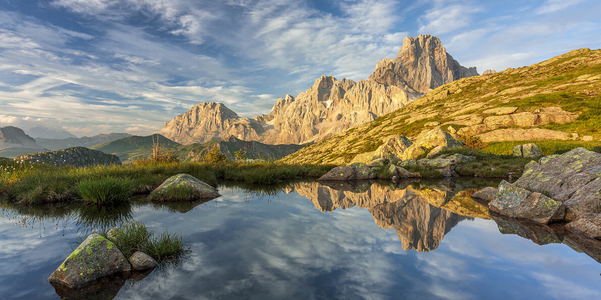
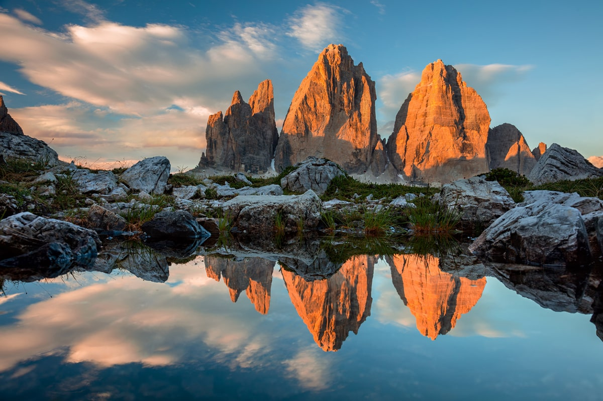
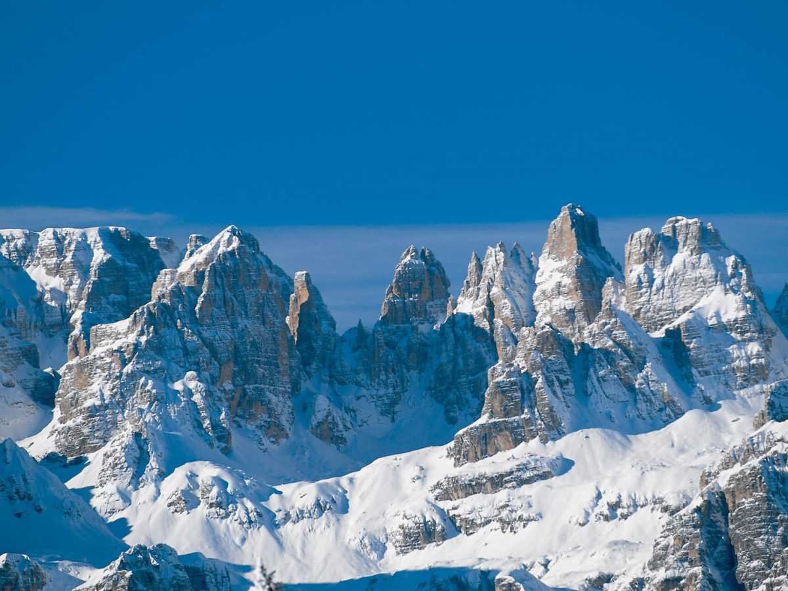

Questa è la tua guida per Parco delle Dolomiti Bellunesi
Il Parco Nazionale delle Dolomiti Bellunesi, istituito nel 1993, si estende per oltre 31.000 ettari nella regione del Veneto, nel cuore delle Dolomiti, dichiarate Patrimonio dell'Umanità UNESCO nel 2009. Il territorio del parco abbraccia un sistema montuoso di straordinaria bellezza, caratterizzato da pareti verticali, valli profonde, foreste secolari e cime che superano i 2.500 metri di altitudine.
Le Dolomiti Bellunesi rappresentano un laboratorio naturale di inestimabile valore, dove la geologia, la biodiversità e le tradizioni culturali si intrecciano in un equilibrio perfetto, offrendo ai visitatori paesaggi da cartolina e un patrimonio naturalistico tra i più ricchi d'Europa.
Attività per i visitatori
Il Parco delle Dolomiti Bellunesi offre oltre 200 chilometri di sentieri segnalati, adatti a escursionisti di ogni livello. Il Sentiero delle Farangole è uno degli itinerari più spettacolari, che si snoda tra pareti rocciose e balconi naturali affacciati sulle valli sottostanti. L'itinerario dedicato a Dino Buzzati, scrittore e alpinista bellunese, conduce alla scoperta dei luoghi che ispirarono il suo capolavoro "Il deserto dei Tartari".
Per gli amanti della speleologia, il parco custodisce la Grotta Azzurra, una cavità carsica di straordinaria bellezza, mentre le Gole del Mis offrono percorsi suggestivi tra pareti scolpite dall'acqua. In inverno, lo scialpinismo e le escursioni con le ciaspole permettono di esplorare i paesaggi innevati in totale sicurezza, accompagnati da guide esperte.

Montagne e paesaggi pari
Le Dolomiti Bellunesi sono un regno di pareti verticali, guglie e pinnacoli rocciosi che si ergono verso il cielo. I Monti del Sole, con le loro cime che superano i 2.400 metri, offrono panorami mozzafiato sulla pianura veneta e sulle Alpi circostanti. Le Gole del Mis, scavate dal torrente omonimo, creano un canyon spettacolare con cascate e piscine naturali di un turchese intenso.
Fauna emblematica
Il camoscio alpino è tra gli abitanti più iconici del parco, insieme al cervo e al capriolo che popolano i boschi di faggio e abete rosso. Il gallo cedrone, il più grande tetraonide europeo, frequenta le foreste più mature, mentre il picchio nero e il picchio tridattilo testimoniano la qualità degli ecosistemi forestali. Nei corsi d'acqua più limpidi vive la rara trota marmorata, endemismo delle Alpi orientali, insieme alla trota fario e al temolo.

Botanica e cultura dolomitica
Un patrimonio botanico straordinario
Il Parco delle Dolomiti Bellunesi custodisce una ricchezza botanica straordinaria, con oltre 1.500 specie vegetali censite. Tra le più pregiate, la Campanula Morettiana, endemismo rarissimo che cresce nelle fessure delle rocce dolomitiche, e la stella alpina, simbolo della montagna, che fiorisce sui pascoli più elevati. Le orchidee spontanee, con decine di specie diverse, colorano i prati tra maggio e luglio, mentre i boschi di faggio offrono rifugio a muschi e licheni di straordinaria bellezza.
Un patrimonio storico e culturale
I borghi di Feltre, con la sua architettura rinascimentale, e Sospirolo, custode di antiche tradizioni, sono le porte d'accesso ideali al parco. Le malghe e i casèi (caseifici) conservano vive le tradizioni casearie, producendo il rinomato formaggio Piave DOP e la polenta di mais Sponcio, una varietà locale coltivata su terrazzamenti storici. La cultura della montagna si esprime anche nelle numerose sagre e manifestazioni che celebrano i prodotti tipici e le tradizioni locali.

Come visitare
Accessi principali: Il Parco delle Dolomiti Bellunesi è facilmente raggiungibile da Belluno e Feltre, due città ricche di storia e cultura. I centri visita di Pedavena e La Santina offrono informazioni dettagliate, mostre interattive e guide qualificate per accompagnare i visitatori alla scoperta del territorio.
Stagionalità: L'estate è la stagione ideale per il trekking e le escursioni in quota, con i sentieri perfettamente segnalati e i rifugi aperti. L'autunno regala colori spettacolari e la possibilità di assistere al bramito del cervo. L'inverno trasforma il parco in un paradiso per lo scialpinismo, le ciaspole e le escursioni in ambienti innevati di rara bellezza.
Consigli: Si consiglia di pernottare nei rifugi alpini per vivere l'esperienza autentica della montagna e di affidarsi a guide esperte per gli itinerari più impegnativi.
Conservazione e riconoscimenti
Sito UNESCO: Dal 2009 le Dolomiti sono Patrimonio dell'Umanità UNESCO, riconoscimento che valorizza l'eccezionale bellezza paesaggistica e l'importanza geologica di queste montagne. Il Parco delle Dolomiti Bellunesi è parte integrante di questo patrimonio mondiale.
Tutela della biodiversità: Il parco promuove attivamente la conservazione degli habitat e delle specie attraverso progetti di ricerca scientifica, monitoraggio faunistico e interventi di ripristino ambientale. Particolare attenzione è dedicata alla protezione della trota marmorata e degli uccelli forestali minacciati.
Educazione ambientale: Numerosi sono i programmi di educazione ambientale rivolti alle scuole e ai visitatori, con attività che spaziano dalle escursioni didattiche ai laboratori naturalistici, per diffondere la cultura della sostenibilità e del rispetto per l'ambiente.